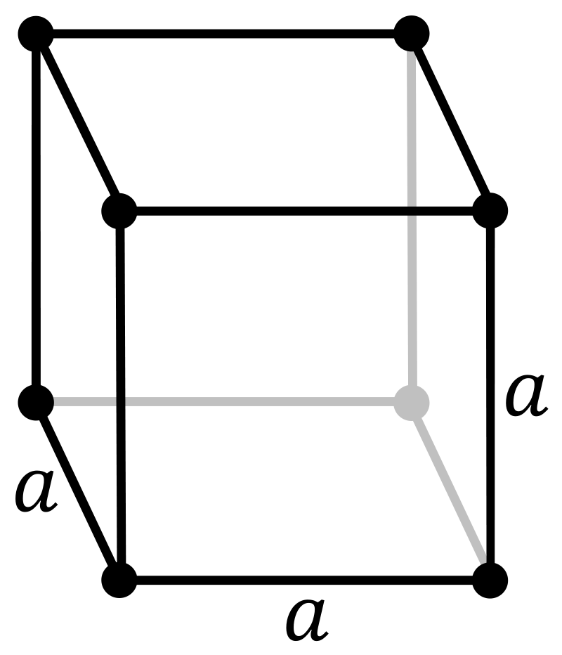

Physical properties
Phase at STP
gas
Melting point
53.48 K (−219.67 °C, −363.41 °F)
Boiling point
85.03 K (−188.11 °C, −306.60 °F)
Density (at STP)
1.696 g/L when liquid (at b.p.) 1.505 g/cm3
Triple point
53.48 K, 90 kPa
Critical point
144.41 K, 5.1724 MPa
Heat of vaporization
6.51 kJ/mol
Molar heat capasity
Cp: 31 J/(mol·K) (at 21.1 °C) Cv: 23 J/(mol·K) (at 21.1 °C)
Atomic properties
Oxidation states
−1 (oxidizes oxygen)
Electronegativity
Pauling scale: 3.98
Ionization energies
1st: 1681 kJ/mol 2nd: 3374 kJ/mol 3rd: 6147 kJ/mol
Covalent radius
64 pm
Van der Waals radius
135 pm
Other properties
Natural occurrence
primordial
Crystal structure
cubic

Termal conductivity
0.02591 W/(m·K)
Magnetic ordering
diamagnetic (−1.2×10−4)
Magnetic susceptibility
−9.0·10−6 cm3/mol
CAS Number
7782-41-4
History
Naming
after the mineral fluorite, itself named after Latin fluo (to flow, in smelting)
Discovery
André-Marie Ampère (1810)
First isolation
Henri Moissan[2] (June 26, 1886)
Named by
Humphry Davy
Main isotopes of fluorine
Isotope
18F
19F
Abundance
trace
100%
Half-life
109.8 min
Decay mode
β+ (97%) ε (3%)
stable
Product
18O 18O